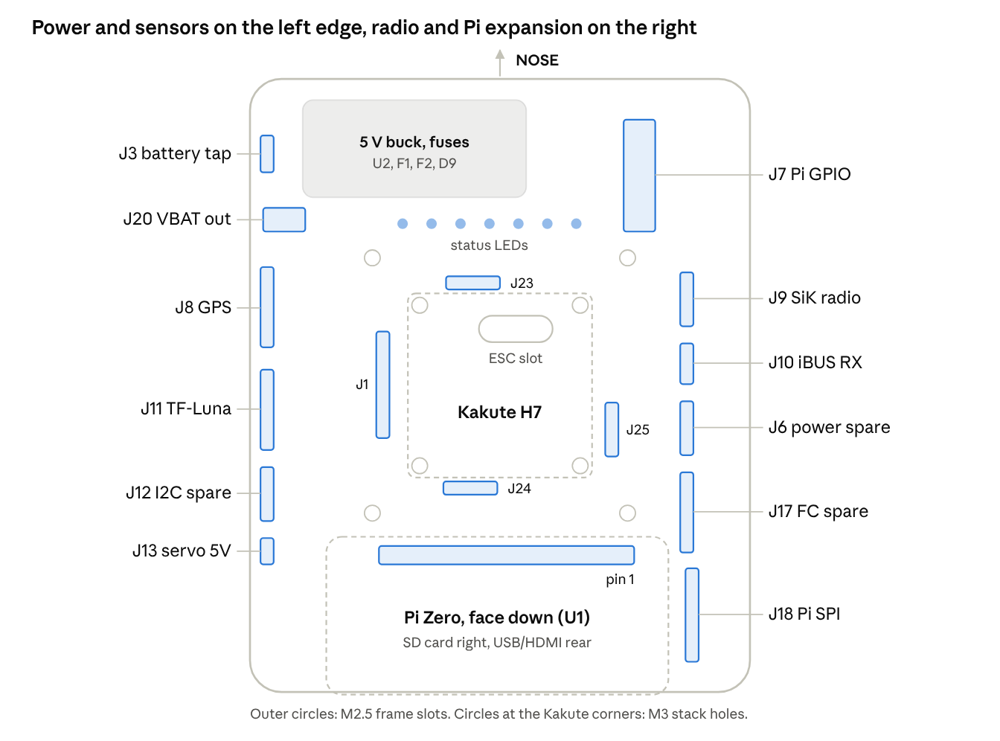
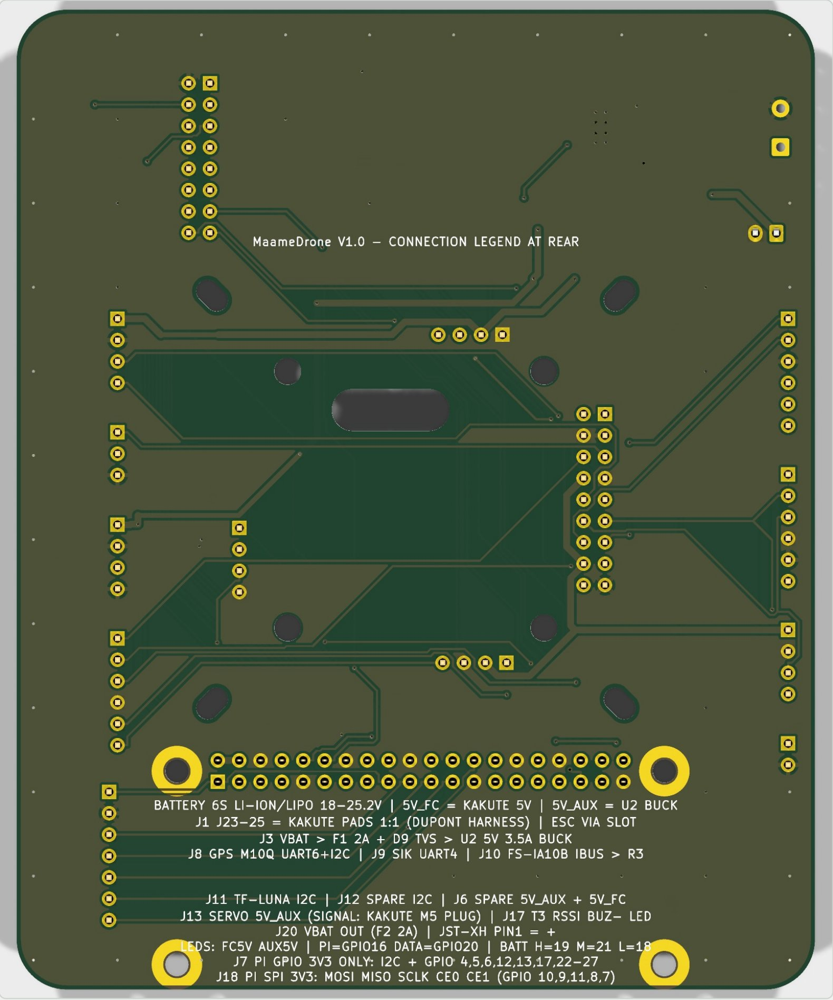

MaameDrone V1.0 carrier board¶
MaameDrone V1.0 is a 95 x 116.5 mm, 2-layer carrier board that joins the Maame quadcopter's flight controller, Pi Zero companion computer and peripherals on one plate. It sits on the Holybro S500 frame. It holds a Kakute H7 V1.5 on its 30.5 mm M3 holes and a Pi Zero W face down on a 2x20 socket. Labelled headers take the GPS, telemetry radio, RC receiver, rangefinder and payload servo.

What the board does¶
- Makes its own 5 V rail (5V_AUX): a TPS54360B buck, 3.5 A, fed from the 6S battery through a 2 A fuse and a TVS diode. It powers the Pi and the servo, so they never load the Kakute's regulator.
- Breaks out the Kakute: a short Dupont harness from the Kakute's solder pads lands on four headers (J1, J23, J24, J25). From there the board routes UART1 to the Pi, UART4 to the radio, UART6 + I2C to the GPS, R3 to the receiver and I2C to the rangefinder.
- Gives a fused battery output (J20) for an accessory, 2 A.
- Shows status on 7 LEDs: both 5 V rails, plus five Pi-driven LEDs for companion, data and battery level.
- Leaves spares: FC spares (T3, RSSI, buzzer, LED), Pi GPIO, Pi SPI, a spare I2C header and spare 5 V.
The ESC is not on this board. It sits on the frame's lower plate and its cable comes up through a slot to the Kakute. The battery's main current never passes through the carrier.
| Item | Value |
|---|---|
| Revision | V1.0, rev 1.0, design dated 2026-10-27 (git commit 333d49e) |
| Size | 95.0 x 116.5 mm, 6 mm corner radius, 2 layers |
| Input | 6S Li-ion or LiPo, 18 to 25.2 V (22.2 V nominal) |
| Rails | 5V_AUX 3.5 A (on-board buck) · 5V_FC (from the Kakute) · 3V3_FC (from the Kakute) · 3V3_PI (from the Pi) · VBAT OUT 2 A fused |
| Assembly | JLCPCB fits the 32 SMD parts; you hand-solder all headers, the Pi socket and the battery wires |
Directions used on this site
Front or nose is the edge with the buck regulator and the "NOSE" arrow. Rear is the Pi's USB/HDMI edge. Left and right are seen from the top with the nose pointing away from you.
Board at a glance¶
All parts are on the top side. The front strip holds the 5 V buck and the status LEDs, the Kakute sits in the middle over the ESC slot, and the Pi Zero lies face down across the rear. Power and FC-bus sensors leave from the left edge; the radio, receiver and Pi expansion leave from the right.

Top side¶
Every pin name on this render is printed on the real board's silkscreen.

Bottom side¶
The back carries a printed connection legend, so the board can be wired without this guide.

Related files¶
- Board design (KiCad 10, git): the
maame-autonomous-dronerepo, commit 333d49e, withfab/ASSEMBLY_NOTES.mdand the JLC fab files. - Project folder:
maame/cover/(moisture lid),maame/fab/(hand-solder BOM, renders PDF),maame/ardupilot/(Lua arming gate),maame/pi/(Pi scripts). - The
maame/carrier/KiCad files andnetlist.jsonin the project folder are the 27 Oct draft and do not match V1.0.